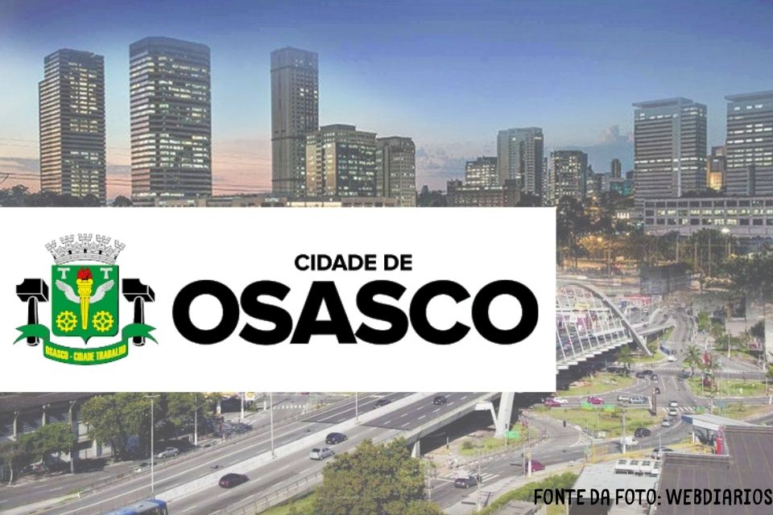
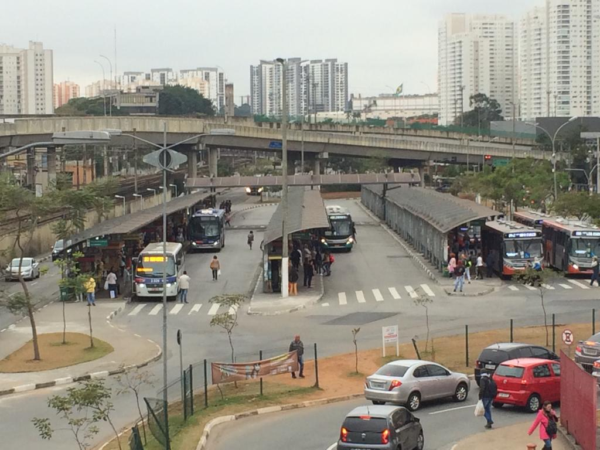
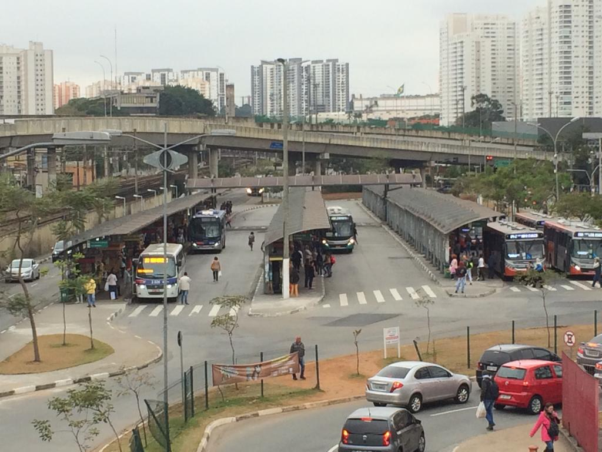
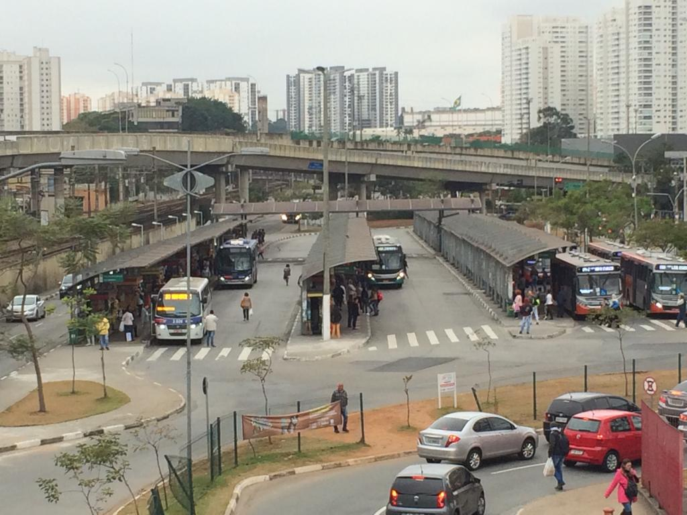
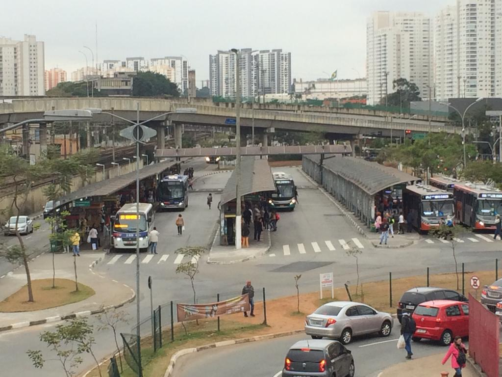

 



Conhecida como “Cidade-trabalho”, Osasco é destaque pelo empreendedorismo e pela força de vontade de seus moradores.De colonização italiana, Osasco teve seu povoamento iniciado por Antônio Agú, que montou a Companhia Cerâmica Industrial de Vila Osasco, no século XIX. Próximo ao Rio Tietê, o trecho antes formado por uma aldeia de pescadores e por fazendas prosperou com a produção de tijolos, telhas, tubos e cerâmicas, sendo assim iniciada a atividade industrial de Osasco.
Com uma área territorial de 64 km² possui importante atividade econômica nos setores industrial, comercial e de serviços. Com 699.944 habitantes, é o 6° município mais populoso do estado de São Paulo, segundo estimativa populacional calculado pelo IBGE para 2020.
A ponte Metálica foi finalizada em inaugurada em 20/12/92, demorou dois anos para ser construída e foi viabilizada na gestão do então prefeito Francisco Rossi. Aliás, no dia da inauguração, aconteceu um show do Fabio Junior, em termos, na verdade, porque caiu uma baita chuva, que atrapalhou o show, mas isso não tirou o brilho dessa obra lindíssima.
O Parque Ecológico Dionísio Alvarez Mateos (Jardim das Flores) ou Parque da FITO, é composta por um Núcleo de Educação Ambiental (NEA), um lago com algumas espécies de peixes e tartarugas, uma quadra de esportes, aparelhos para ginástica ao ar livre, um playground, sanitários (limpeza merecendo uma melhor atenção da administração, no dia da visita) e pistas de caminhada.
O Museu do Relógio Professor Dimas de Melo Pimenta é o único do gênero na América Latina e existe desde 1950.Contando com um acervo riquíssimo com raridades da relojoaria e itens de grande valor técnico e histórico, com certeza é uma viagem no tempo, repleta de conhecimentos interessantes.Entre as cerca de 650 peças, destacam-se modelos curiosos, como o relógio “Despertador com Cafeteira”, uma tendência dos séculos XIX e XX e um dos itens mais queridos do acervo que tem um mecanismo como o café italiano.
| Nome do prefeito | Ano eleito | Partido | |
|---|---|---|---|
| Rogério Lins | 1º de janeiro de 2017 | PODE | Atual |
| Jorge Lapas | 1º de janeiro de 2013 | PT / PDT | |
| Emídio Pereira de Souza | 1º de janeiro de 2005 e 1º de janeiro de 2009 | PT | |
| Celso Giglio | 1º de janeiro de 2001 | PSDB |
| Dados tecnicos baseados em 6 pontos , sendo eles Populaçao, trabalho e rendimento, educação, economia, saúde, território e ambiente | ||
|---|---|---|
| POPULAÇÃO | População estimada [2021] | 701.428 pessoas |
| TRABALHO E RENDIMENTO | Salário médio mensal dos trabalhadores formais | 3,1 salários mínimos |
| EDUCAÇÃO | Matrículas no ensino fundamental | 92.317 matrículas |
| ECONOMIA | PIB per capita | R$ 117.298,82 |
| SAÚDE | Mortalidade Infantil | 12,44 óbitos por mil nascidos vivos |
| TERRITÓRIO E AMBIENTE | Área da unidade territorial | 64,954 km² |
Todos os dados usados na tabela sao fornecidos pelo IBGE : Site do IBGE